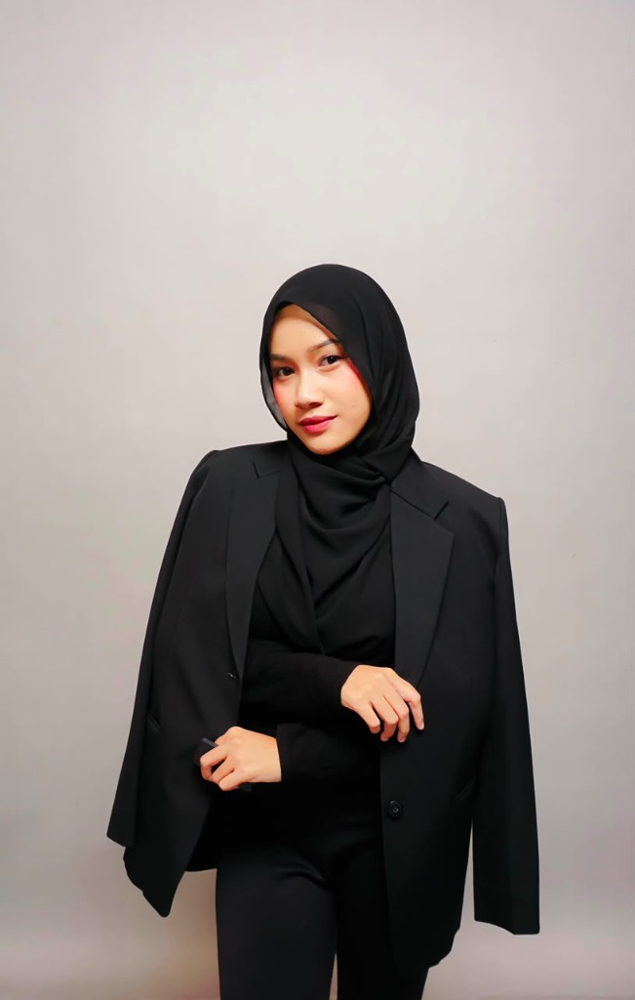
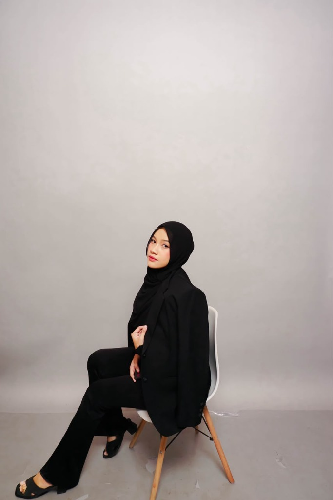
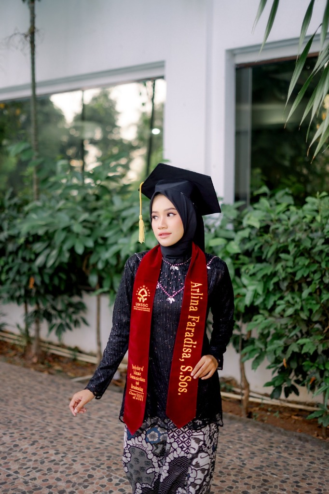
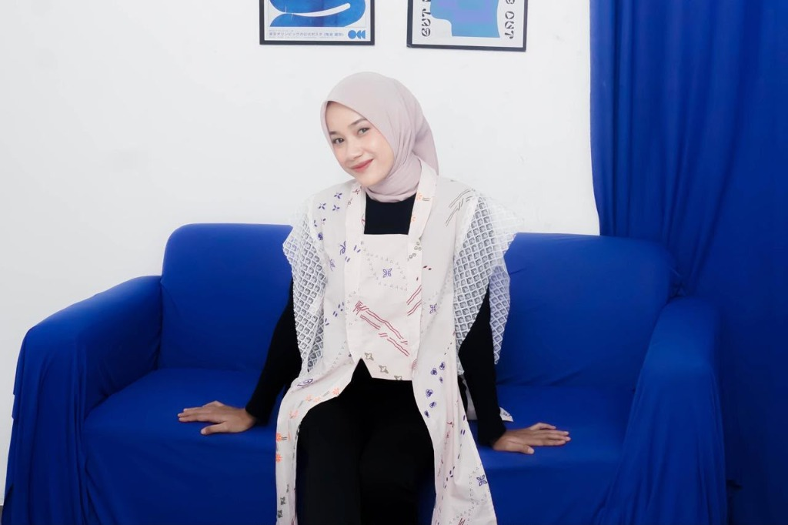
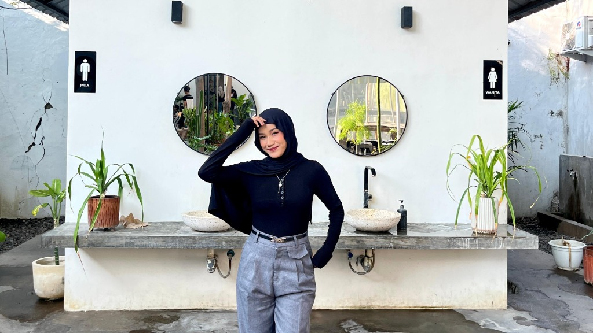
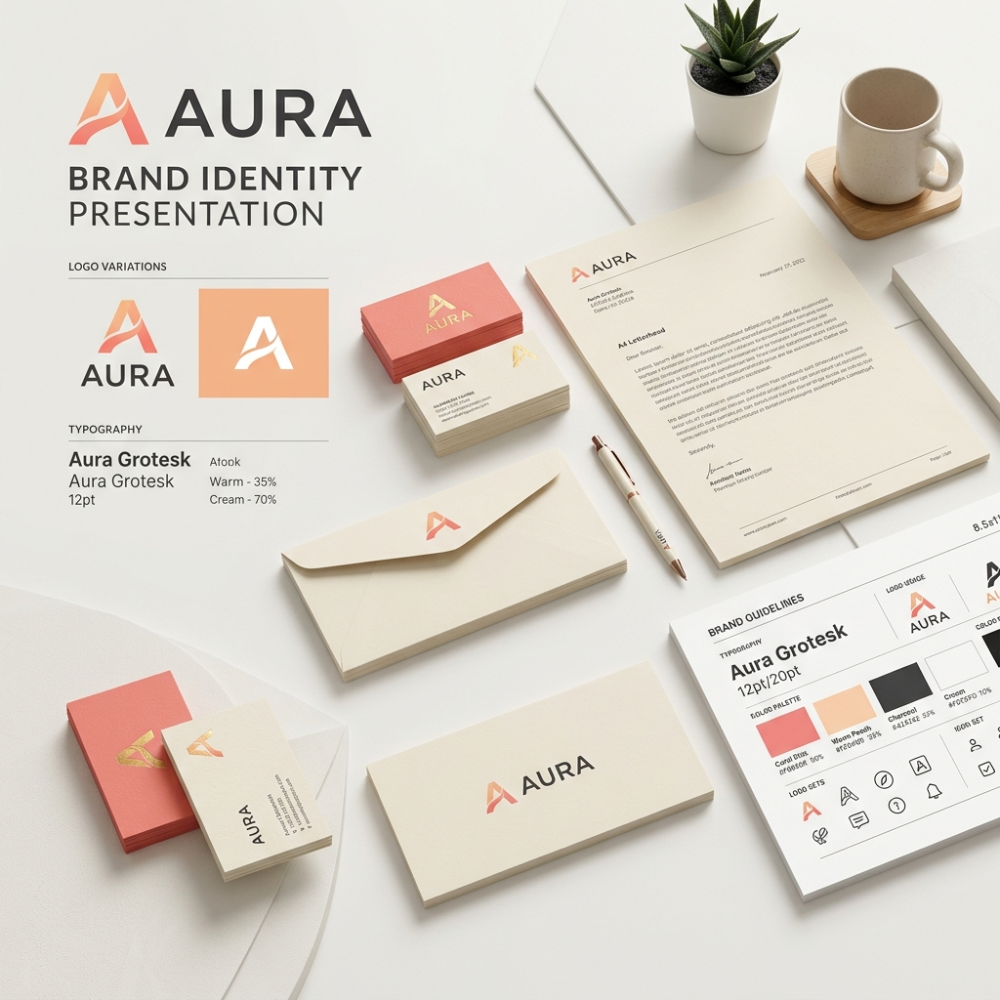
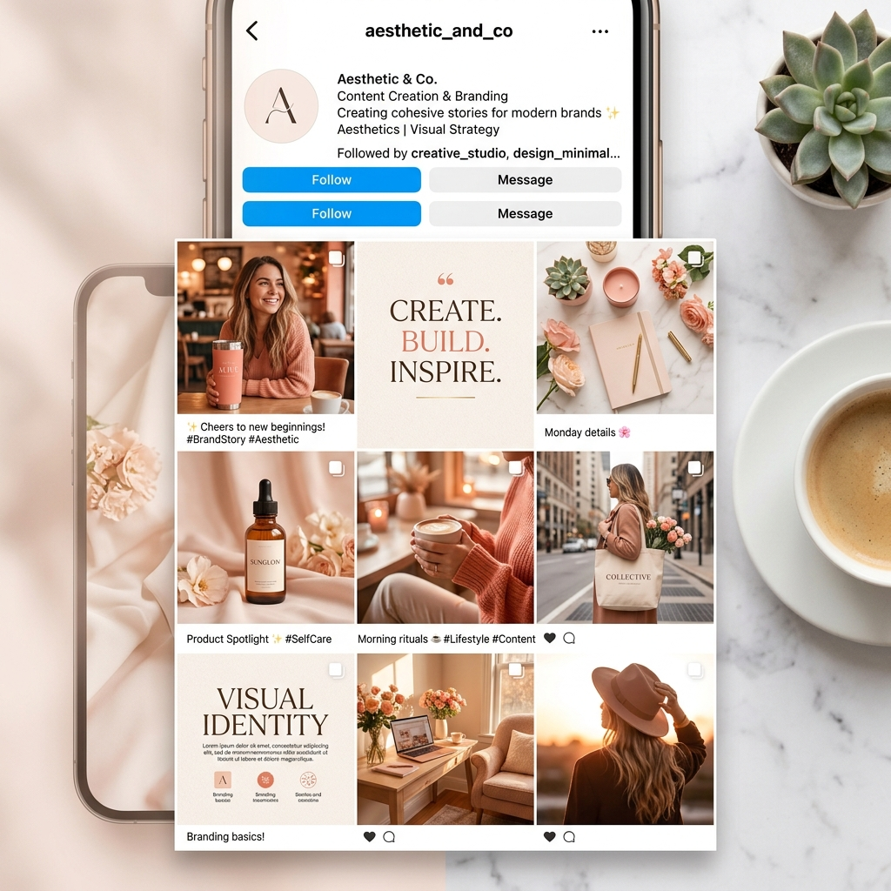
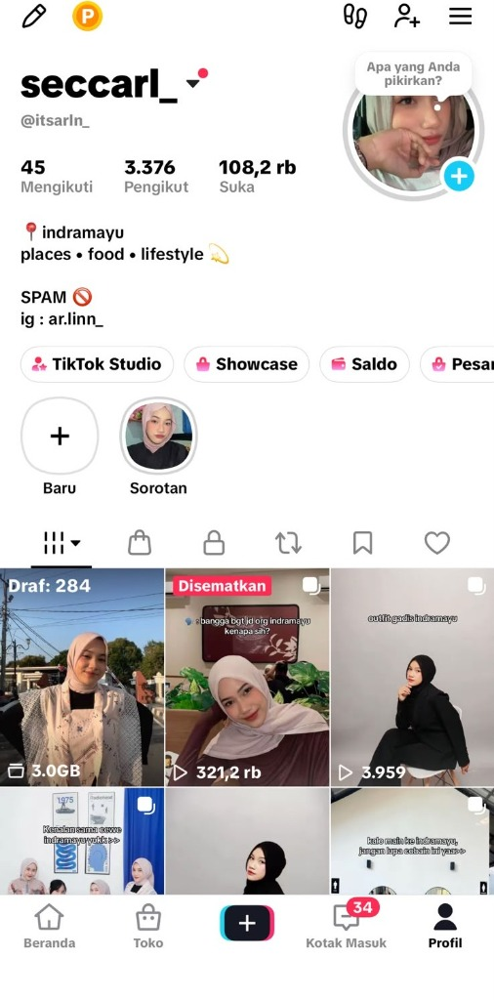
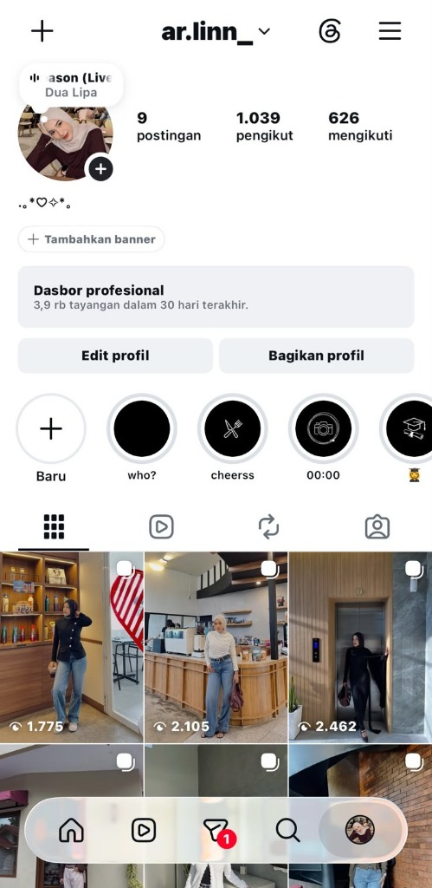
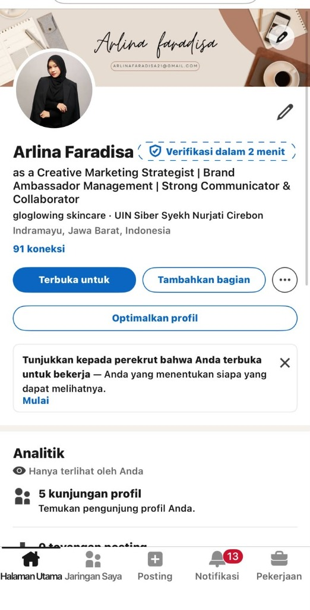

Marketing Creator dengan pengalaman lebih dari 1 tahun di industri skincare. Berpengalaman mengelola 50+ Brand Ambassador, menyusun 200+ Creative Brief, dan menghasilkan 272M+ views dari kampanye digital.


Halo! Saya Arlina Faradisa, seorang Marketing Creator dengan pengalaman lebih dari 1 tahun di industri skincare. Berpengalaman mengelola lebih dari 50 Brand Ambassador, menyusun Creative Brief, merancang strategi konten, dan berkolaborasi dengan berbagai brand melalui campaign endorsement.
Saya memiliki pemahaman mendalam mengenai Content Marketing, Influencer Marketing, dan Trend media sosial yang mendukung pertumbuhan brand secara digital. Lulusan S1 Komunikasi dan Penyiaran Islam dari IAIN Syekh Nurjati Cirebon dengan IPK 3.71.
Menempuh pendidikan sarjana dengan fokus pada strategi komunikasi publik, penyiaran media massa, jurnalistik, dan produksi konten digital yang menjadi landasan strategis dalam menyusun campaign marketing yang berdampak dan tepat sasaran.
Jurusan Komunikasi dan Penyiaran Islam (KPI) • Fakultas Ushuluddin dan Dakwah
Teknik penyiaran, produksi audio-visual, framing konten, dan penyusunan content scripting.
Komunikasi massa, retorika, public speaking, dan manajemen hubungan publik/media.
Analisis perilaku audiens digital, pembentukan engagement, dan perencanaan kampanye kreatif.
Riset narasi mendalam, etika komunikasi, dan penulisan copy yang persuasif serta autentik.

Rekam jejak pengalaman kerja nyata dalam pengelolaan campaign brand, influencer marketing, pembuatan konten, dan operasional bisnis digital.
Skills, tools, dan sertifikasi yang mendukung pekerjaan saya di bidang content & marketing.
Merancang strategi content marketing yang efektif untuk meningkatkan brand awareness dan engagement secara organik.
Mengelola dan mengembangkan akun social media brand dengan strategi konten terencana, evaluasi performa, dan engagement tinggi.
Berpengalaman mengelola 50+ Brand Ambassador, menyusun creative brief, dan memastikan konten sesuai identitas brand.
Membuat konten TikTok dari ide, scripting, shooting, editing hingga publishing. Salah satu konten mencapai 300K+ views organik.
Melakukan riset tren media sosial, evaluasi performa konten berdasarkan engagement, views, dan trend TikTok terkini.
Menguasai berbagai software kreatif, analisis data, serta memiliki sertifikasi resmi dari MySkill (2024) untuk Social Media Strategy, Content Marketing, dan Creative Copywriting.
Highlight pengalaman kerja dan project nyata yang pernah saya kerjakan di bidang marketing dan content creation.

Mengelola 50+ Brand Ambassador, menyusun 200+ creative brief sesuai strategi campaign, menghasilkan 272,28 M views dari 5.003 postingan, dan evaluasi performa konten.

Mengembangkan akun TikTok 3.300+ followers dengan konten lifestyle, beauty, daily life. Salah satu konten viral 300K+ views secara organik.

Berkolaborasi dengan brand seperti Peditox dan Meenie Box by Remine Studio melalui endorsement, visit, dan barter collaboration.

Mengelola proses pembuatan konten lengkap mulai dari ide, scripting, shooting, editing hingga publishing untuk berbagai platform.
TikTok Profile

Instagram Profile

LinkedIn Profile
